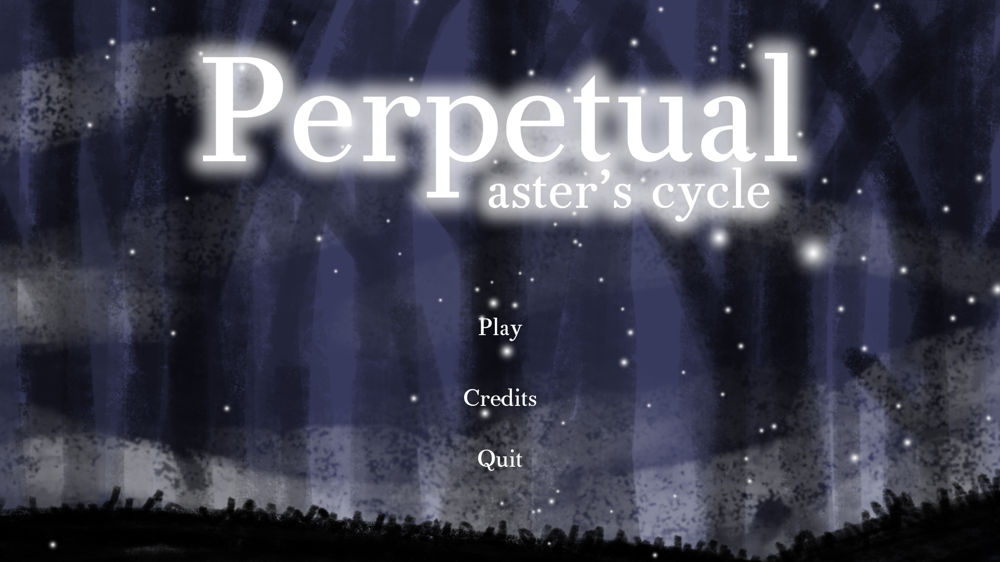
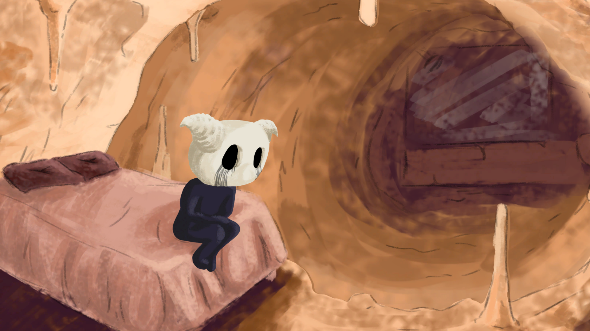
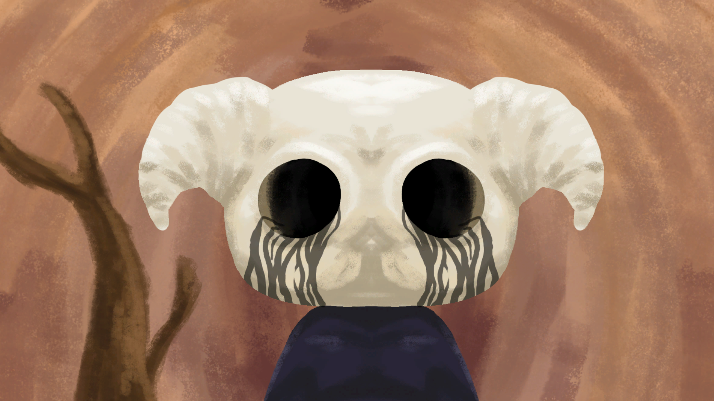

The Game
"Perpetual" is a videogame developed by Inner Gecko (Vicente Pinho) as a college project at the end of the school year of 2021. The game had some principles that he had to follow: The theme of the project was "Wild Nature" and it had be made in Unity and it had to be a 2.5D videogame, although the genre of the game was open to its developer's choice. This was supposed to be a group project but due to its classmates lack of time, Inner Gecko ended up doing the project by himself in the time of approximately one month, which had him choose to develop a point and click "autobiographic" visual novel instead of a side-scroller action game like the previous project.

Main Menu of the game
Story
Inspired by the developer's real life events and by the indie developer Angela He, the story of "Perpetual" follows Aster and the characters way of thinking and interacting with the world around it during the day. The games revolves around the themes of depression, anxiety, body dysmorphia and suicidal thoughts, and it has 4 possibles endings/outcomes to the story of Aster. The game has the intention of bringing awareness to the problematics it plays on, as well as showing and trying to explain how the head of a mentally ill person works.

First Scene of the game
Characters
Characters of the game:
- Aster
- Father
- Mother
- Teacher
- Train Dog
- Snake Noose

Aster before putting his mask on
Development of the game
Art
All of the art and animations of the game were done by Inner Gecko using Photoshop CC 2019.
The art had to be done by layers and divided while being produced, in order to construct a 2.5D setting and apply a more interesting camera mechanic to the game.
Inspired by artists like Hayao Miyazaki, Junji Ito, Angela He and games like Hollow Knight and Undertale
Programming/Game Construction
All of the programming was done using Visual Studio and Unity.
The programming was the most challenging part for the developer personally, since he had an arts background and programming was a thing he had just started learning at the time this game was being developed. Racing against the clock, he found difficulties in some new basic programming concepts, like singletons, that he didn't knew about but had to use for the game to work as intended.
Music of the game
The music of the game was produced by the amazing musician Filipe Pinheiro, please check him out.
About the developer
At the time of developing "Perpetual", Inner Gecko is a 18 years old aspiring game developer, animator and illustrator, with heavy interests in music production and and storytelling. This is the first videogame project of Inner Gecko.